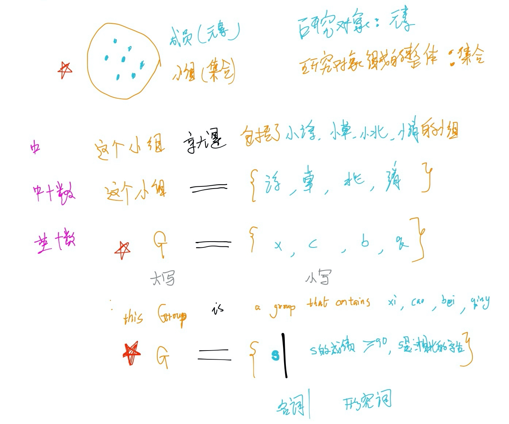

↓ 集合简介 ↓
📗集合的定义
🍋什么是集合, 什么是元素

元素: 研究对象 (成员)
集合: 研究对象组成的整体 (小组)
元素∈集合
|
集合列举 |
|
| 中文表达 |
这个小组 就是 一个包括了小溪 小草 小北 小清的组 |
|
| 中文+数学 |
这个小组 = {小溪 小草 小北 小清} |
|
| 英文+数学 |
G = {x, c, b, q} |
👌 |
| 英文表达 |
This Group is a group that contains xi, cao, bei, qing |
|
| 英文+数学 |
G = {s/s的成绩>90, s是湘北的学生} |
|
🍋集合三特性
三大特性: 确定性, 互异性, 无序性
- 确定性: 班上头发比较长的同学.
- 唯一性: 班上叫"小明"的同学.
- 无序性: 班上"丁丁", "冬冬"换了座位.
🍋按元素的个数划分
- 没有元素: 空集∅; card(A)=0
- 元素个数有限个: 有限集; card(A)=5
- 元素个数无线个: 无限集; card(A)= +∞
💡按元素的紧密划分
- 元素之间分散着: 离散集; 数学中如N,Q,现实中几乎都是离散的
- 元素之间紧连着: 连续集; 数学中如R,C.
📗集合的类型
🍋一维点集
如: 实数集
🍋二维点集
如: 平面坐标点, 平面向量, 复平面
🍋三维点集
如: 空间坐标点, 空间向量
🍋其他元素类型:
如: 函数, 动物,
📗集合的表示方式
🍋Venn图
🍋描述法
🍋列举法
🍋数轴表示/坐标表示
🍋区间表示
🍋规定字母表示
| 表示方法⬇️ |
一维集合 |
二维集合 |
一维集合 |
二维集合 |
一维集合 |
二维集合 |
一维集合 |
二维集合 |
| 描述法 |
{x⏐1≤x≤2}
名词: x, 形容词: 1≤x≤2 |
{(x,y)⏐x+y≤1}
名词: (x,y), 形容词: x+y≤1 |
|
|
|
|
|
|
| 列举法 |
{1,2,3} |
{(1,2),(2,5),(3,4)} |
|
|
|
|
|
|
| 区间 |
[1,2]
[1,2)
(1,2]
(1,2) |
|
|
|
|
|
|
|
| 通用符号 |
R 表示实数
Q 表示有理数
Z 表示整数
N 表示自然数
N∗或者N+ 表示正整数 |
|
|
|
|
|
|
|
| 几何表示 |
一维数轴 |
二维坐标 |
|
|
|
|
|
|
| Venn图表示 |
|
|
|
|
|
|
|
|
🍋类似的概念
集合, 范围, 区间, 定义域, 值域, 最大最小
↓ 集合的运算 ↓
📗包含关系
🍋子集
子集⊆集合
🍋真子集
真子集⊂集合
🍋相等
集合A = 集合B
📗交, 并, 补
🍋交集
🍋并集
🍋补集
例1:
集合A={x∈N|0<x≤5},用例举法来表示
解1:
A={1,2,3,4,5}
例2:
集合A={x|x2−5x+6=0},用例举法来表示
解2:
A={2,3}
到底了